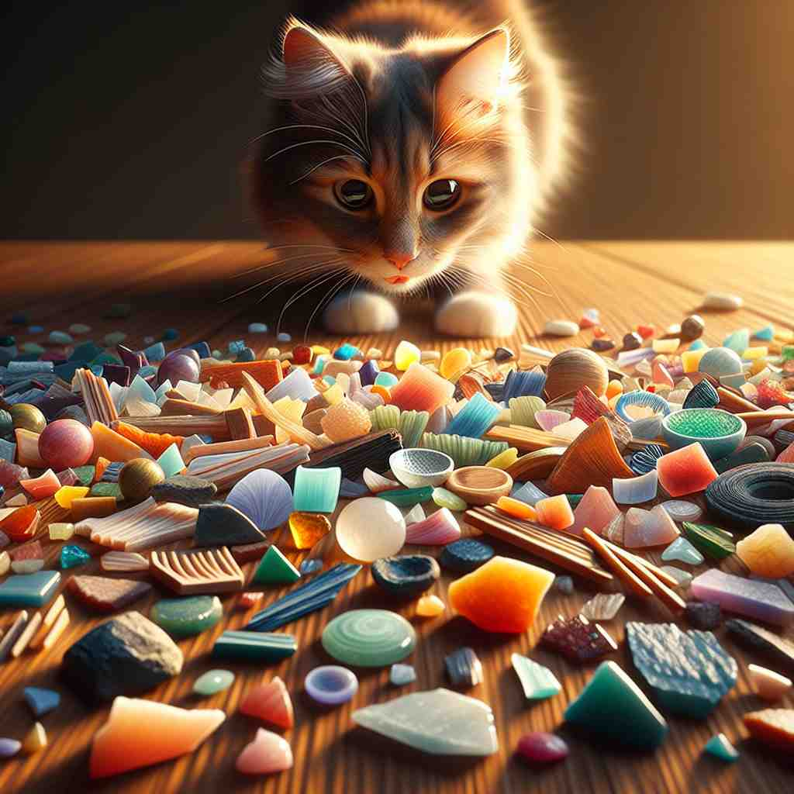

💬 The artist collects a wood chip to use in his project.

💬 The cat is playing with colorful chips on the table.
🔈 [tʃɪp]
🗝️ n. a small piece broken or cut off from a larger piece
🖼️ 在一个木工作坊中，工匠正在雕刻一块精致的木雕。随着他的小刀轻轻滑过表面，一小块木头掉落在地板上，形成了一片片小木屑，展现了'chip'作为一个小块从大块物体上断落的过程。
🔍 想象一个小碎片或薄片，这就是'chip'的核心含义。无论是实物（如玻璃碎片、薯片）、抽象概念（如赌场筹码）还是技术领域（如计算机芯片），都源于这个基本概念。动词用法则描述了产生这种小片的动作。通过联想这个核心图像，你可以更容易理解和记忆'chip'的各种含义。
💬 The artist collects a wood chip to use in his project.
💬 The cat is playing with colorful chips on the table.
🌳 “chip” 这个词源于古英语中的“cipp”，意为小碎片或薄片。它本身没有明显的词根词缀组成，但在现代意义中，它有多重含义，比如薯片、小块或芯片。
💡 可以将 “chip” 想象成一个小小的“碎片”或“小块”，帮助记忆它的不同意图：比如，薯片和电子芯片都是由更大的整体分割出来的小部分。这种“分离”的特性是“chip”这个词的一种核心意义。
🗝️ n. a thin slice of food, especially one fried until crisp
🖼️ 在一个温馨的厨房里，一位厨师正在准备晚餐。他从锅中捞起一片金黄色的土豆片，放在盘子里。那片土豆片脆脆的，还散发出诱人的香气，展示了'chip'作为一种油炸薄片的含义。
💬 I love eating potato chips.
❓ 源自小片的概念，应用于食物
🗝️ n. a small disk used as a counter in some gambling games
🖼️ 在一个灯光璀璨的赌场里，一位玩家全神贯注地盯着赌桌。他手中把玩着几枚五颜六色的筹码，等待着下一轮的下注。这些筹码象征着投注金额，是'chip'在博彩游戏中的含义。
💬 He placed his chips on the roulette table.
❓ 形状类似小片或碎片
🗝️ n. a small piece of semiconductor material used to make an integrated circuit
🖼️ 在一个高科技实验室里，工程师们正在显微镜下小心翼翼地检查一枚微小的硅片。这个硅片是集成电路的核心部分，体现了'chip'作为半导体材料的使用。
💬 This computer has a powerful processor chip.
❓ 形状和功能类似于小片
🗝️ v. to break or cut something, removing a small piece
🖼️ 在一个古老的瓷器店中，店员不小心碰掉了一只精美的瓷盘，他发现盘子的边缘缺了一小块。这次损坏正是由'chip'的过程造成的，展示了'chip'作为动词指切掉或去掉一小块的作用。
💬 Be careful not to chip the paint when you move the furniture.
❓ 动词形式，描述产生小片或碎片的动作
🗝️ v. to hit a golf ball in a short high shot onto the green
🖼️ 在一个翠绿的高尔夫球场上，选手正在决定如何将球击上果岭。他调整姿势，使用短杆打出一个短而高的球，这种精准的短打被称为'chip'。
💬 He chipped the ball onto the green from just off the edge.
❓ 高尔夫球动作像切下一小片